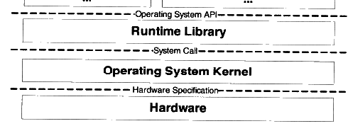
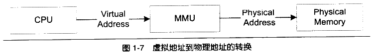
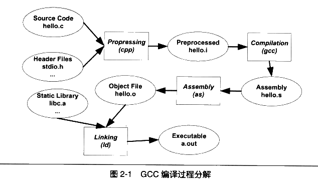
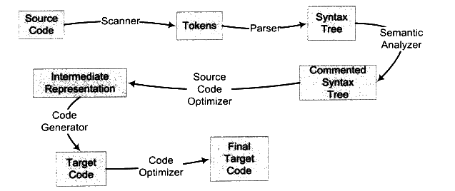
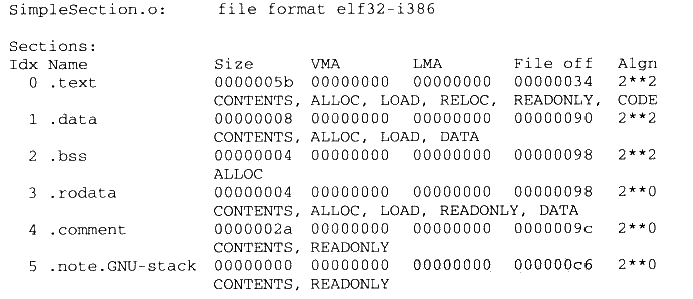
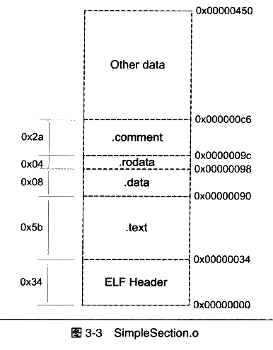

基础知识

操作系统应用程序编程接口：应用程序的接口的提供者是运行库（Runtime Library），运行库使用操作系统提供的系统调用接口。
直接使用物理内存的坏处：
- 地址空间不连续
- 内存使用效率低
- 程序运行的地址不确定
使用虚拟地址：

程序只能够访问到虚拟地址，不感知物理地址，一个程序可以分为好多段，好多页，页分为虚拟页，物理页和磁盘页。程序访问的是虚拟地址，如果虚拟地址映射的物理页不在物理内存中，会出现缺页中断，由操作系统进行接管，来处理缺页中断，所以呢，程序并不感知物理地址。
用户线程和内核线程并不总是一对一，又可能是多对一或者是多对多。
静态编译

预处理（processing)，编译（Compilation），汇编（Assembled），链接（Linking）
预编译：
- 展开所有的宏定义”#define”
- 处理所有条件预编译指令,”#if”,”#ifdef”,”elif”,”#else”,”#endif”
- 处理”#include”预编译指令，递归地将包含的文件插入到该编译指令的位置
- 删除所有的注释
- 添加行号和文件名标识
|
|
编译：
将预编译之后的代码进行编译，得到汇编代码
|
|
汇编：
将汇编代码转换为机器指令
|
|
链接：
|
|
编译过程

- 词法：lex程序，将源代码的字符序列分割成一系列的记号
- 语法分析：根据记号进行分析，产生语法树
- 语义分析：分为静态语义和动态语义，对语法树中进行标识
- 中间代码生成：将语法树转为中间代码。中间代码使得编译器可以被分为前端和后端，前端可以负责产生机器无关的中间代码，后端将中间代码转换为目标机器代码。三地址码：就是对于中间代码，操作都是三个地址+一个操作
- 目标代码生成与优化：通过代码生成器来生成目标机器代码
链接器
符号：用来表示一个地址，这个地址可以是一个子程序的起始地址，也可以是变量的起始地址。
链接的主要内容是把各个模块之间的相互引用的部分处理好，使得各个模块之间能够正常链接好，“程序员人工调整地址”，包括地址和空间分配，符号决议和重定位。
静态链接：每次函数调用都必须确切知道函数的地址，但是由于每个模块都是单独编译的，在编译器编译的时候并不知道函数的地址，所以等到链接的时候由链接器将这些指令的目标地址来修正，得到函数的地址。对于全局变量和定义在其他文件的变量也是一样的道理。
重定位：给程序中每个引用到其他文件的地址打补丁，让他们引用到正确的绝对地址。、
目标文件
目标文件格式
- 可重定位文件（relocatable file)：包含代码和数据，可以被用来链接成可执行文件和共享目标文件。包括静态链接文件
- 可执行文件（executable file）：可执行文件
- 共享目标文件（Shared Object File）：包含代码和数据，有两个作用：跟可重定位文件生成新的可执行文件，或者可以与可执行文件结合来运行程序
- 核心转储文件（core dump file):core文件
目标文件格式
- 文件头:描述整个文件的文件属性，包括文件是否可执行，是静态链接还是动态链接以及入口地址，目标硬件和目标操作系统等信息，还包括一个段表，描述我呢见中各个段在文件中的偏移位置及段的属性
- text段：机器代码（在内存都是只读）
- data段：已初始化的全局变量和局部变量
- bss段：未初始化的全局变量和局部静态变量
挖掘
|
|


代码段
1objdump -s -d test.o数据段和只读数据段
1objdump -x -s -d test.o.rodata为只读数据段，存储程序中的只读变量和字符串变量
BSS段
未初始化的变量
其他小技巧：
分析mp3等其他文件
|
|
自定义段
|
|
ELF文件结构描述
|
|
- .rel.text:重定位表
- .shstrtab:字符串表
链接的接口：符号
定义C++宏，只有在C++程序中才能够进行编译
|
|
强符号和弱符号
强符号：默认函数和初始化的全局变量
弱符号：未初始化的全局变量
|
|
强引用：对外部目标文件的符号引用在目标文件被最终链接到可执行文件时，要被正确决议，如果没有找到错误，要报编译错误
弱引用：如果符号没有被定义不报错误
|
|
gcc中生成调试段：加上-g